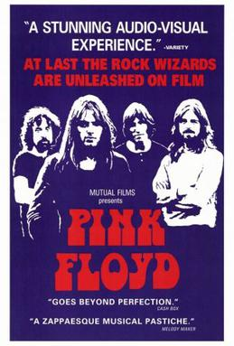
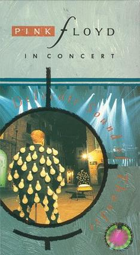
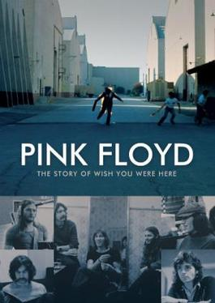

Live at Pompeii (1972)
Film documental y concierto dirigido por Adrian Maben que presenta una actuación única en el anfiteatro de Pompeya, Italia, en 1971. A diferencia de otros conciertos en vivo, este evento no tuvo audiencia presente, lo que permitió a la banda crear una experiencia íntima y cinematográfica. El film captura la banda interpretando varias de sus canciones más emblemáticas, incluidas versiones extendidas y experimentales de temas como "Echoes" y "One of These Days". Además de las actuaciones, el documental también ofrece imágenes evocadoras del antiguo sitio de Pompeya, lo que añade una dimensión visual y atmosférica única a la película.
The Wall (1982)

Película musical dirigida por Alan Parker, basada en el álbum homónimo lanzado en 1979. La película sigue la historia de Pink, un rockstar atormentado por sus traumas de la infancia, la fama y el aislamiento emocional, quien construye un muro simbólico para protegerse del mundo exterior. A medida que el muro se completa, Pink se sumerge en una espiral de autodestrucción y alienación. La película combina secuencias narrativas con impresionantes animaciones y actuaciones en vivo de Pink Floyd, creando una experiencia visual y auditiva única.
Delicate Sound of Thunder (1989)
Grabado durante la gira mundial de la banda en apoyo a su álbum "A Momentary Lapse of Reason", el álbum captura las actuaciones en vivo de Pink Floyd en el Nassau Coliseum de Nueva York en agosto de 1988. Presenta una selección de canciones de "A Momentary Lapse of Reason", así como también clásicos de Pink Floyd de álbumes anteriores. La película, dirigida por Wayne Isham, ofrece una experiencia visual impresionante con imágenes en vivo de la banda, efectos visuales elaborados y una excelente calidad de sonido.
Pulse (1995)

Este trabajo fue grabado durante la gira "The Division Bell" en 1994, específicamente en el Earls Court Exhibition Centre de Londres. Presenta interpretaciones en vivo de varias canciones de Pink Floyd, incluyendo éxitos clásicos como "Comfortably Numb", "Wish You Were Here" y "Another Brick in the Wall". La película, dirigida por David Mallet, combina imágenes de las actuaciones en vivo con impresionantes efectos visuales, creando una experiencia visual y auditiva inmersiva para los espectadores.
The Pink Floyd and Syd Barret Story (2001)

A través de entrevistas con miembros de la banda, amigos, colaboradores y material de archivo, el documental ofrece una mirada perspicaz a la vida y el legado de Syd Barrett, así como a la formación de Pink Floyd y el papel crucial de Syd Barrett en los primeros años de la banda, destacando su genio creativo y su influencia en el sonido inicial del grupo. También examina la creciente fama de Pink Floyd y los desafíos que enfrentaron como banda, incluidos los problemas de salud mental de Barrett que eventualmente llevaron a su partida en 1968.
The Story of Wish You Were Here (2012)
Acompañado de entrevistas con los miembros restantes de la banda, así como con colaboradores clave y amigos, este documental revela los desafíos creativos y personales que enfrentó Pink Floyd durante la realización del álbum homónimo lanzado en 1975 (incluida la presión de seguir el éxito monumental de "The Dark Side of the Moon"). También examina la temática de "Wish You Were Here", que aborda temas como los problemas en la industria de la música y la ausencia de su antiguo miembro, Syd Barrett.